Graphics and audio pass
261019. Nine of the ten GFX & Audio options; option 8, the summit upgrade in Blender, followed once Blender was running: map report. Captures: Unity Game view at 960 x 2658 (the 9:16 column), or rendered straight from the game camera where an effect lasts under half a second (marked "camera render", no HUD). Numbered pins mark what changed. Nothing here touches the physics: every new component is render or audio only, and inert in the statistics gates.
1. Settings split again: Match and Show
The new switches (slow motion, quality, three mix channels) did not fit the Settings tab, which already filled the sheet. The rules stay in Match; how the match looks and sounds moved to Show. Two layout faults of the old tab are fixed on the way: "Opportunist" overflowed its segment, "Camera cut-aways" wrapped onto two lines.
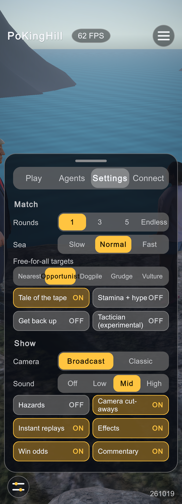
123- "Opportunist" runs past its segment.
- "Camera cut-aways" wraps.
- One Sound level for everything.
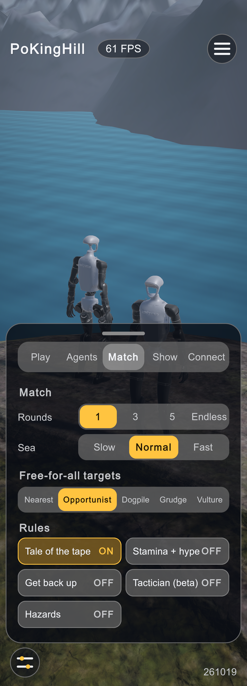
123- Five tabs: Play, Agents, Match, Show, Connect (tab text 28 px so all five fit).
- Target buttons sized by their label: "Opportunist" fits.
- Hazards joins the rules.
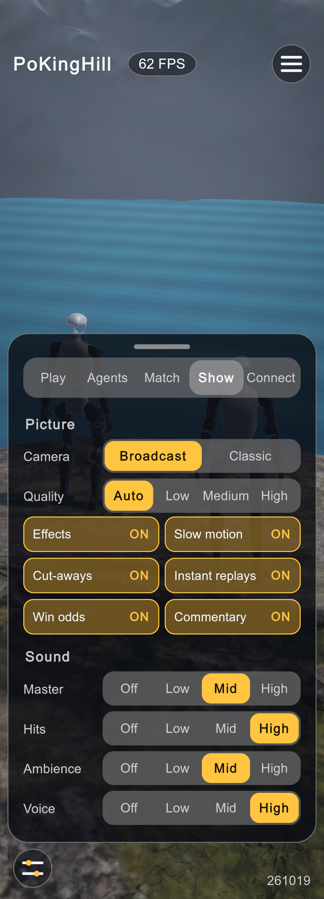
123- Quality: Auto, Low, Medium, High (QualityTier).
- Slow motion (TimeWarp), on by default.
- Master, Hits, Ambience, Voice: each channel is a multiplier on Master.
2. Fighters: seat-colour rim, edge danger, impact flash
Every opaque fighter material (the G1 parts and the two scanned humans) is rebuilt at start on FX/Fighter.shader, a URP PBR shader with
four match-driven layers: a fresnel rim in the seat colour, wear, wet, and a hit flash. The rim turns a pulsing red once the fighter's capture point is
within 12 cm of the rim, and a red point light follows the fighter furthest past it. Hair and other alpha-tested materials keep their own shader.
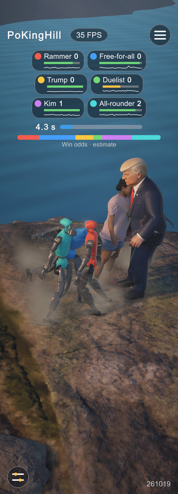
1- Seat colour only on torso, pelvis and head; no cue for who is about to fall.
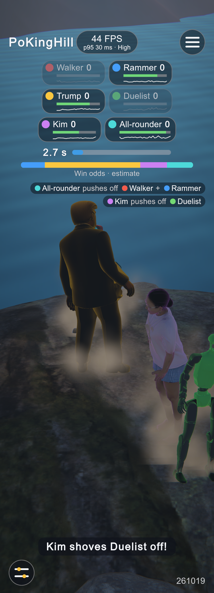
122- Telemetry pill (debug switch): mean FPS, then a smaller second line with the 95th-percentile frame time and the tier in force (a first one-line version ran over the title).
- Seat-colour rims: Trump (yellow seat), the Duelist (green).
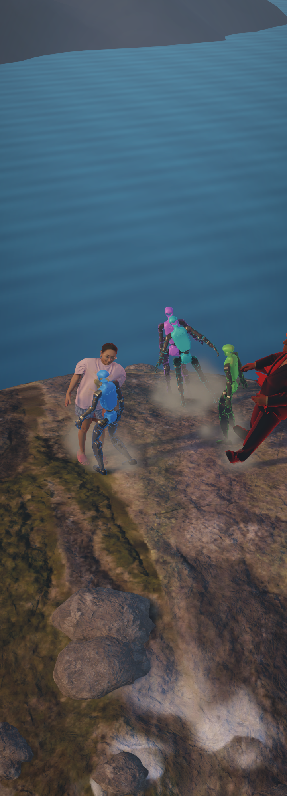
1- Trump's capture point is past the rim: red pulsing rim and the danger light.
3. Wear and the wet look
Wear builds up per part from the pushing force it takes (contacts with other fighters, and the ground for anything but the feet; 2500 N s wears a part fully) and is cleared when a match starts. Scratches are object-space lines that fade once thinner than a pixel. Wet (darker, glossy) comes from being below the sea and dries over 20 s; a fighter out of the sea also drips for a few seconds.
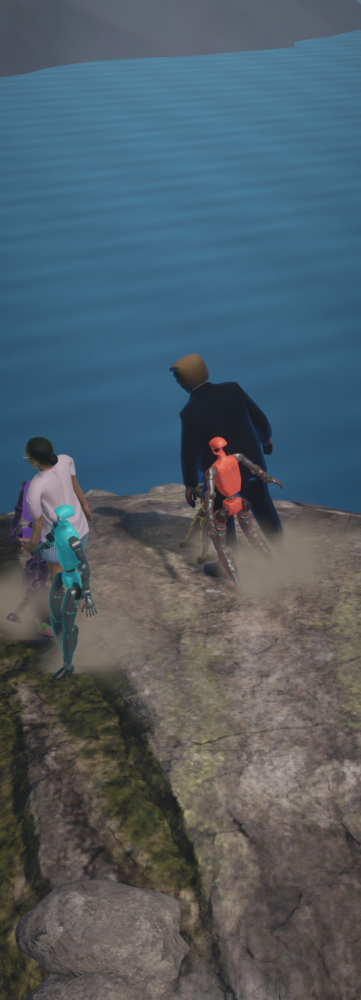
1- Grime and short bare-metal scratches.
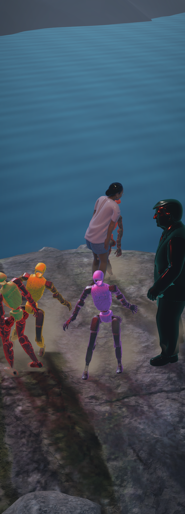
12- Wet: Kim's skin and hair glossy.
- Rejected look: the red danger rim lit nearly everyone (it started 35 cm inside the rim) and 4 mm scratches aliased into glitter. Both fixed: 12 cm threshold, coarser lines with a pixel-width fade (left).
4. Shockwave and lightning
A hard hit (impact strength 0.7 and up) sends a screen-space ring out from it through the ShockwaveFeature renderer feature (added to
both URP renderers; the pass is only queued while a wave runs, so it costs nothing otherwise) plus a dust ring along the ground. Once the storm is past
half way, or the live weather has a thunderstorm, lightning strikes the sea every 5-12 s: a bolt about 2 px wide whatever the distance, a double flash of
a directional light, and thunder from the strike's direction, delayed by the distance.
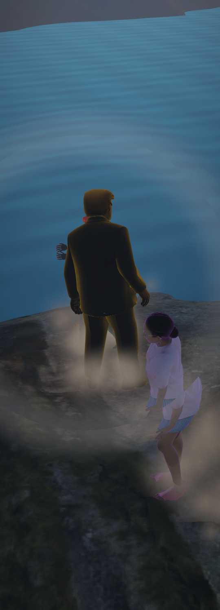
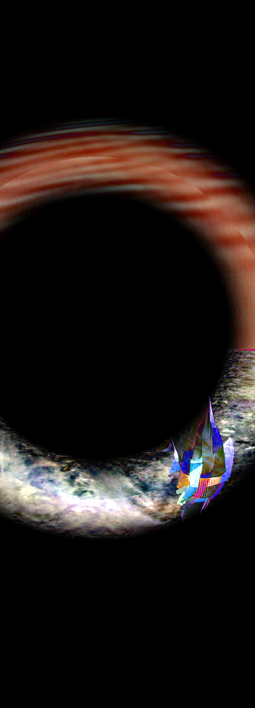
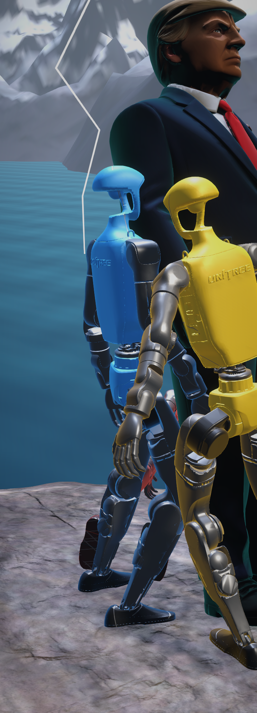
1- The bolt, 34 m out; the flash lights the far mountains.
5. Sound (measured, not captured)
Still no audio files: SoundPool synthesizes its clips at start, the beds run in ImpactSynth.OnAudioFilterRead. Levels below
are the RMS of each bed after the mix (Master Mid, Ambience Mid), from the editor during six-way fights; the filter's peak stayed at 0.44-0.52 after the
crowd was turned down (it clipped at 1.0 on the first pass).
| Voice | Source | Measured |
|---|---|---|
| Hits | 3D one-shots at the hit (SoundPool: distance roll-off, direction, doppler): thud, clank for G1 on G1, smack for a hit human, grunt in that body's voice (Trump low, Kim high) | 5 rounds: 237 thuds, 143 clanks, 2 smacks, 1 grunt, 387 one-shots |
| Friction | Contact list every 20 ms: a planted foot sliding scrapes, two fighters rubbing grind (metal for G1 pairs) | slide 0.4-1.0, grind up to 0.73 |
| Wind | Two low-passed noises, gusting; louder in Hazards gusts and with the live wind speed | RMS 0.008-0.025 |
| Surf | Brown noise swelling every ~6.5 s, grows as the sea rises | RMS 0.004-0.033 |
| Crowd | Noise through three formants, murmuring; swells on hype, knock-outs, the end of a round, a gasp when a fighter teeters at the rim | RMS 0.017-0.062 (was 0.14-0.51 before the retune) |
| Rumble | Very low noise during a Quake hazard | only during quakes |
| Mix | Ambience ducks to 45 % while the commentary voice speaks; everything low-passed under water and in slow motion |
6. Slow motion, quality and telemetry
TimeWarp slows time to 0.3x for 0.7 s the first time in a round a fighter's capture point crosses the rim heading out, and nearly freezes
for 70 ms on the hardest hits (5 rounds: 9 slow-motions, 5 hit stops). Only Time.timeScale changes, so each 2 ms physics step is the same; it
never runs in the gates, in replays, or while something else owns the time scale. QualityTier presets set post-processing, shadows,
anti-aliasing, particle and decal budgets and (in a player only) the render scale; Auto steps down in a player build when a fight stays under 45 FPS.
Each round's telemetry line in the JSONL now carries perf: FPS, mean and p95 frame time, managed KB per frame, tier.
Player performance
Release player (ParityBatch.BuildPlayer, 540 x 960, i7-10750H, -kothPerf 30, six-way scene, quality Auto = High, all effects on):
run 1 54.5 FPS mean, frame p50 16.7 ms / p99 27.0 ms, one 2.1 s hitch at launch; run 2 59.1 FPS, p50 16.7 / p99 26.4 ms, max 81 ms. Physics is the heavy part:
a 2 ms step of six bodies takes 1.0 ms (p99 2.9), so 477 of the 500 steps/s keep up. The new materials and shaders compile into the player (no missing-shader
fallback). There is no earlier six-way measurement to compare against: the last -kothPerf numbers (60 FPS) were for the two-fighter scene.
7. Self-collision audit
Self-collision audit (training/scripts/collision_audit.py, and EditMode
CollisionTests on the Unity XML): self-collision is enabled only foot/shin against the other leg (32 pairs per body).
G1 and Trump are clean in zero, rest and T-pose; Kim's foot boxes overlap 3.5 mm in her rest pose, a pair the simulation
collides, so every Kim episode starts with her feet pressed together. Fixing it changes her physics and needs her next retrain.